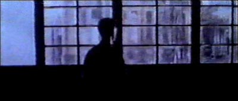

|

Vinduet er skittent. Skrevet av Martin Nordli
Illustrert av Morten Skogly
Vinduet er skittent. En død potteplante i vinduskarmen. Linoleumen er støvete. En dam på gulvet og en paraply stilt opp mot veggen. Han står lent mot veggen. Smerten i armene er tydelig. Det begynner som en svak murring. Det forplanter seg i albuene. Han leser opp for seg selv teksten. Han stanser ved fjerde vers. Han leser det igjen.
Teksten er uforståelig. Den ligner et nett av ukjente bokstaver. Han ligger i den myke sengen. Regnet trommer mot taket. Han forsøker å finne et helt stille rom i seg selv. Til isolering. Kan han lempe teksten inn der? Og la den forvitre? Da inneholder mørket en bevegelse. En forskyvning. Som melk spilt i vann, eller et tynt såpemiddel. En morgen trekker han blikket i tvil. Stolene står på rekke. En kvinne står naken foran vinduet. Hun skjuler brystene med hendene. Han samler sammen restene av en natt. Legger dem i bæreposer. Stabler dem i entreen. Han begynner å se en sammenheng mellom sine egne bevegelser og interiøret. Teksten er fortsatt bare et nett han tenker han kan folde ut og fange ting i. Sollyset faller på møbelementet. Ettermiddagene blir lengere. Han sitter i stolen, forsøker å male noe ut. En innbildning, kanskje, at verden skal bli satt sammen av alle disse fragmentene. Teksten viser seg for ham i stadig mer sammensatt form. Hun kommer tilbake til vinduet. Det virker ikke som om hun er var ham. Det som forandrer seg, forandrer seg sakte. Retningene spriker. Drivverket peker ut seg seg selv. Og ditt minne er revnende likegyldig. Det du sier forsvinner i lufta. Regler brytes aldri. Du er blek om morgenen. Som et ark. Om kvelden er du like blek. Forandring forekommer så å si ikke. Stillheten er et langt ord. Ikke som barnets ansikt som knekker om i gråt. Redselsgråt. Den forkrøplede blir hengende etter. Hva består redselen av?
|